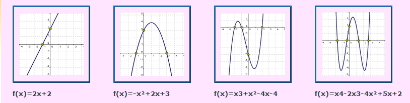
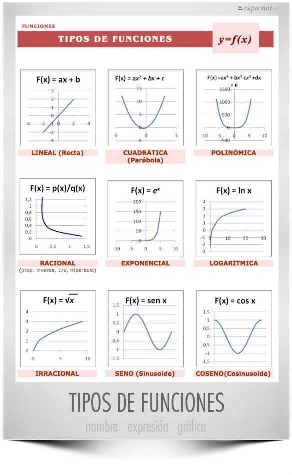
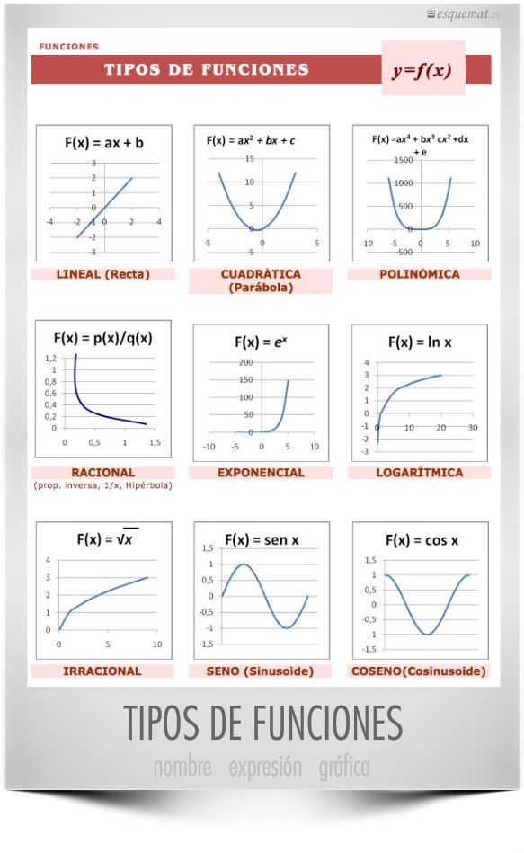

Funcions
En las funciones algebraicas las operaciones que hay que efectuar con la variable independiente son: la adición, sustracción, multiplicación, división, potenciación y radicación.
En las funciones algebraicas las operaciones que hay que efectuar con la variable independiente son: la adición, sustracción, multiplicación, división, potenciación y radicación.
